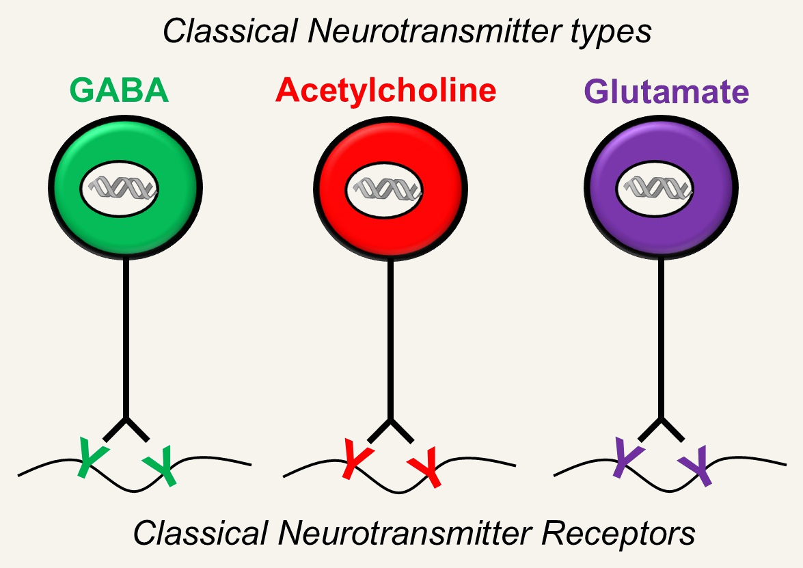
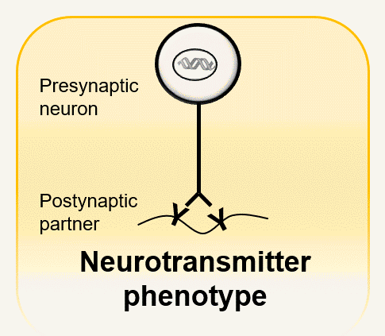
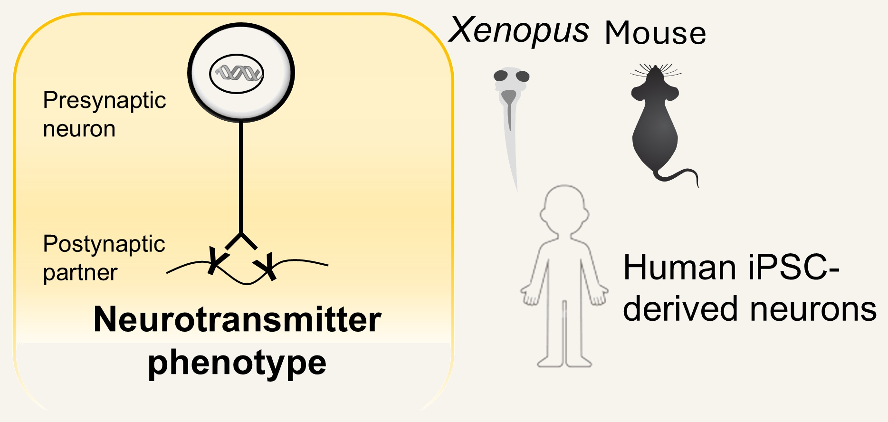
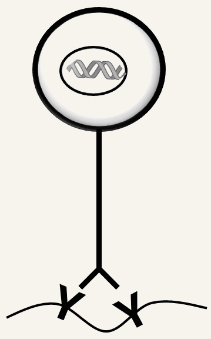
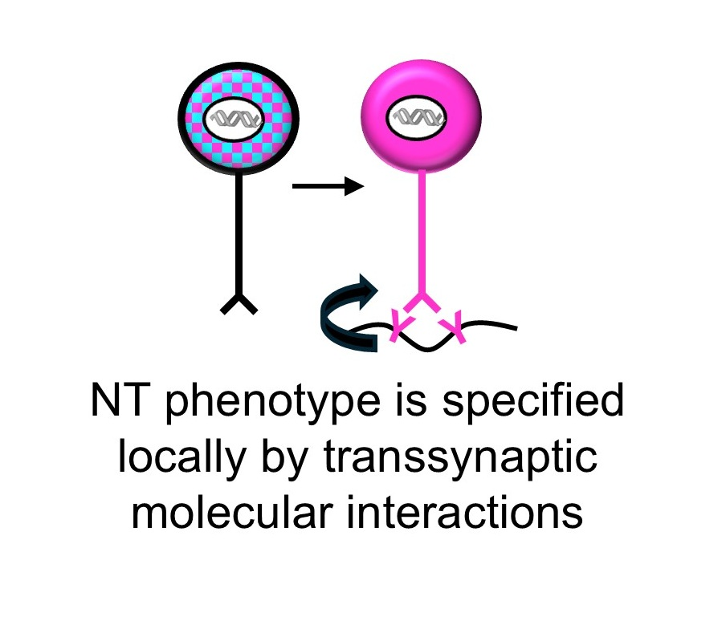
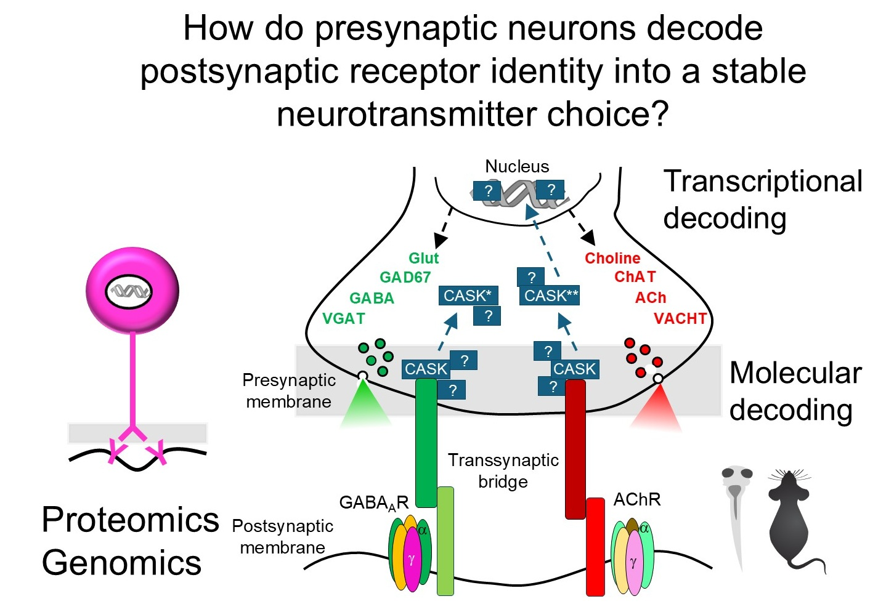
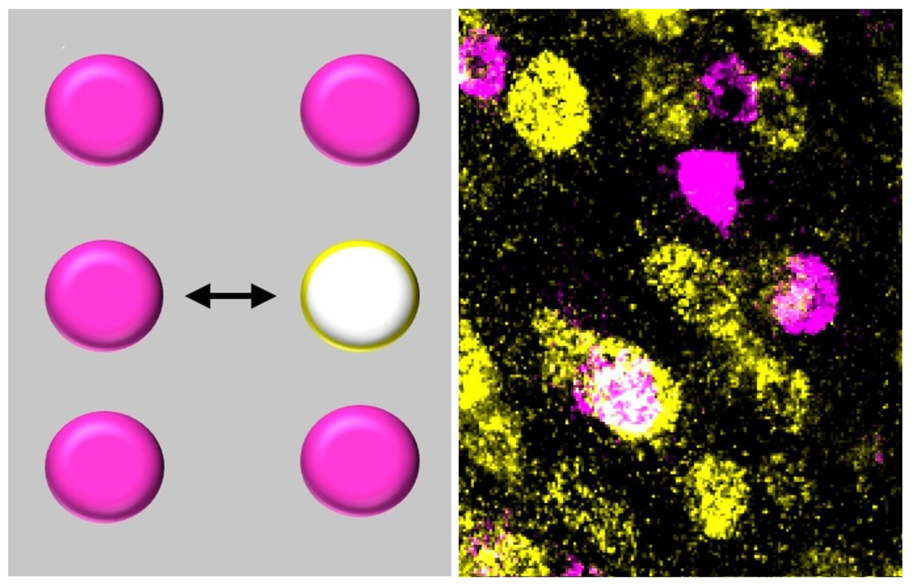
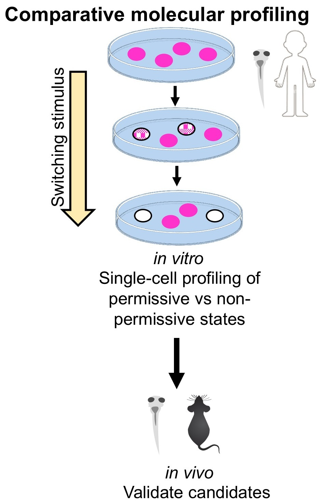

Neurotransmitter phenotype of a synapse is a combinatorial matching problem

Synaptic function depends on correct matching of neurotransmitters with their receptors.

Every synapse must:
- Specify the right neurotransmitter
- Stabilize that identity across development and experience
- Modify it when circuits need to adapt
These processes operate throughout the life of the animal. We study the molecular logic behind all three.
We work in Xenopus laevis, mouse, and human iPSC-derived neurons, tracking conserved mechanisms and building toward new therapies.



Every synapse must match its neurotransmitter to the right receptor. We discovered that this match is actively enforced — postsynaptic receptors send a retrograde signal back to the presynaptic neuron through dedicated transsynaptic bridges, stabilizing transmitter identity. Remove the receptor, and the presynaptic neuron loses its transmitter. Introduce a new one, and it switches.
But how does the presynaptic neuron read these signals and translate them into a stable transmitter choice? We are mapping the molecular logic of this decoding process — identifying the full interactome of these bridges and the transcriptional programs they activate. The scaffold protein CASK, recruited differentially by receptor type and capable of nuclear localization, is a key candidate decoder. Using proteomics, ChIP-Seq, and viral tools in Xenopus and mouse, we aim to define the rules by which receptor identity is converted into presynaptic gene expression.

Imbalances in excitatory/inhibitory neurotransmission are central to autism spectrum disorder and schizophrenia. Understanding how receptor-transmitter pairs are specified reveals how this balance is established — and how to restore it.
Godavarthi SK et al. Postsynaptic receptors regulate presynaptic neurotransmitter stability through transsynaptic bridges. PNAS, 2024.
Myasthenia gravis is a disease of lost connection. The immune system destroys acetylcholine receptors at the neuromuscular junction — and without those receptors, the retrograde signal that tells the motor neuron to keep making acetylcholine disappears. The synapse goes silent. The muscle stops moving.
But what if you could rebuild the connection using a different receptor? We are testing whether introducing a non-canonical GABA receptor into muscle is enough to establish an entirely new transsynaptic bridge — switching the synapse from cholinergic to GABAergic and restoring transmission. Early data in Xenopus are promising. We are now extending this receptor engineering strategy to mouse models of myasthenia, toward a gene therapy that bypasses the immune system entirely.

Myasthenia gravis and congenital myasthenic syndrome are debilitating with no curative treatments. This approach offers synaptic repair through receptor-driven identity reprogramming — a fundamentally new therapeutic concept.
Godavarthi SK et al. Postsynaptic receptors regulate presynaptic neurotransmitter stability through transsynaptic bridges. PNAS, 2024.

Neurotransmitter phenotype is not fixed. Under certain conditions — prenatal stress, acute trauma, drugs of abuse — neurons change their transmitter identity, and the consequences show up as autism, PTSD, and addiction. Intervening early can prevent these outcomes; intervening in adults can reverse them.
But the same stimulus does not affect all neurons equally. Only ~30% switch — the rest hold their identity. What determines whether a neuron's transmitter phenotype is stable or malleable? We are using single-cell profiling to compare permissive and resistant neurons in the same animal, searching for the molecular logic that governs this choice — and the handles needed to control it.

Aberrant neurotransmitter switching contributes to autism (prenatal insults), PTSD (acute stress), and addiction (drugs of abuse). Identifying the molecular constraints opens new therapeutic avenues across all three.
Godavarthi SK et al. Embryonic exposure to environmental factors drives transmitter switching causing autistic-like adult behavior. PNAS, 2024. · Li H, …Godavarthi SK et al. Generalized fear after acute stress caused by change in neuronal co-transmitter identity. Science, 2024.